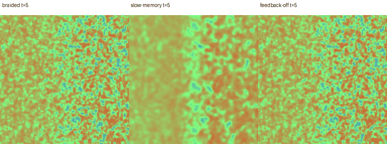

Four interacting rhythms run inside every voxel. Their activity writes persistent material. That material changes how the next rhythms communicate.
The moving slices below show the same law in a 128³ domain. Wave bands form, migrate and reorganize. Slow material memory changes their later activity; the two sides retain different recurrent constitutions.

Four pairs of recurrent channels have different internal timescales. Neighboring voxels exchange those channels. Positive fast activity converts local nutrient into persistent solid; the opposite part of its cycle erodes solid back into nutrient. Solid changes communication, recurrent thresholds and coupling between fast and slow rhythms.
The recurrence and the two constitutions were designed. The initial feedstock is uniform and the latent state begins with small seeded noise. There are no trained weights, genetic selection, added creatures or procedural surface details in this experiment.
Photograph source and interpretation · Parameters · Julia implementation